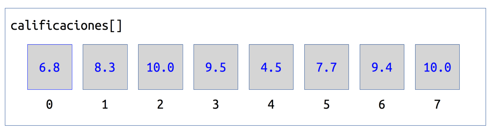

Arreglos
En numerosas ocasiones, cuando se intenta resolver un problema mediante la programación, surge la necesidad de contar con la posibilidad de
almacenar un conjunto de datos. Algunas de esas veces los datos tienen características en común, por ejemplo que sean del mismo tipo y
representen una misma cosa.
Por ejemplo, en una lista de calificaciones de cierto profesor hay datos en común y representan una misma cosa. Un dato sería una palabra,
que representa el nombre del alumno; mientras otro dato sería un número que representa la calificación. Siguiendo el ejemplo, sería impráctico
y muy complicado declarar en un programa tantas variables como alumnos haya en un grupo.
La forma de almacenar esto es en una estructura llamada Arreglo.
Arreglos Unidimensionales
Un arreglo unidimensional es un tipo de dato que permite almacenar un conjunto de datos homogeneos, es decir, del mismo tipo de dato. Al declararse
el arreglo debe indicarse el tamaño, en ese momento el compilador reserva la memoria que se necesite para almacenar los datos solicitados por el
programador.
El límite en la dimensión de los arreglos varía dependiendo del lenguaje de programación que se utilice, siendo el límite natural la memoria de la
computadora.
Dim nombre As New tipoDato[tamaño]
Imaginese que un arreglo es como un conjunto de lockers. Cada locker tiene cierto tamaño para guardar objetos en él y todos son de las mismas
dimensiones. Para diferenciar entre ellos e identificar uno en particular, cada locker posee un número único con el cual puede ser encontrado.
Un arreglo funciona de la misma forma. Al declararse se debe especificar el tamaño, es decir el número de localidades de memoria. Es como
si se declararan muchas variables del mismo tipo al al mismo tiempo y asociadas todas ellas a un nombre en común.
Por ejemplo, considere el caso de un profesor que desea tener una lista de calificaciones de cierto grupo. En ese grupo tiene 8 alumnos
y las calificaciones son numéricas no necesariamente enteras. Esta es la lista de calificaciones.
| Numero de Lista |
Nombre |
Calificación |
1
|
Hugo
|
6.8
|
|
2
|
Luis
|
8.3
|
|
3
|
Veronica
|
10.0
|
|
4
|
Claudia
|
9.5
|
|
5
|
Mario
|
4.5
|
|
6
|
Octavio
|
7.7
|
|
7
|
Victoria
|
9.4
|
|
8
|
Artemio
|
10.0
|
En este caso, podrían declararse 8 variables donde cada una contendría la calificación de cada alumno, pero esto resulta impráctico de muchas
formas. Una de ellas ocurre si el grupo tuviera más alumnos habría que hacer muchas declaraciones y ademas la forma de acceder a los datos
sería poco práctico. Por otro lado, si hubiera alumnos que se dan de baja entonces la lista disminuiría y habría que hacer cambios funcionales
en el código que hayamos escrito. Este problema y otros más se pueden resolver con un arreglo.
Para este ejemplo declaremos un arreglo que se llame calificaciones,
de tipo Single y de 8 localidades. Esto se haría con la siguiente línea de código.
Dim calificaciones As New Single[8]
Como puede obervar, el arreglo fue declarado como Single lo que significa que todas los contenedores dentro de el son del
mismo tipo, es decir, son homogéneas. Para diferenciar las calificaciones, cada alumno debe tener un número de lista.

Observe que la numeración de las localidades del arreglo comienza en 0, quizá lo más natural para un humano sería comenzar la
numeración de las lolcalidades de memoria desde 1 hasta 8, pero se comienza en 0 debido a la manera
como están numeradas las localidades de memoria en las computadoras y se hace de esta forma en la gran mayoría de los lenguajes de
programación.
Cada una de las localidades actúa entonces como una variable independiente de las demás, por esa razón puede ser leída y/o modificada
sin afectar a las demás. Lo que tienen en común las variables en los contenedores, es que son del mismo tipo y que pertenecen al mismo arreglo, en este
caso el arreglo calificaciones.
Por ejemplo, observe el programa a continuación y trate de entender como funciona.
Public Sub Main()
Dim calificaciones As New Single[8]
calificaciones[0] = 6.8
calificaciones[1] = 8.3
calificaciones[2] = 10.0
calificaciones[3] = 9.5
calificaciones[4] = 4.5
calificaciones[5] = 7.7
calificaciones[6] = 9.4
calificaciones[7] = 10.0
End
En este programa declaramos un arreglo llamado calificaciones tipo Single de 8 posiciones. Luego se le asignan
a todas las lolcalidades todos los valores de la tabla mostrada anteriormente.
Si por alguna razón se intentara hacer referencia a una localidad que no exista en el arreglo, el compilador mandará un mensaje de error. Por ejemplo,
si ignoraramos el hecho de que la numeración de las localidades comienzan en 0, el código incorrecto sería el siguiente:
Public Sub Main()
Dim calificaciones As New Single[8]
calificaciones[1] = 6.8
calificaciones[2] = 8.3
calificaciones[3] = 10.0
calificaciones[4] = 9.5
calificaciones[5] = 4.5
calificaciones[6] = 7.7
calificaciones[7] = 9.4
calificaciones[8] = 10.0
End
Este programa envía un mensaje de error "Fuera de los límites" que indica que se rebasaron los límites del arreglo, debido a que solo
existen 8 posiciones en memoria que comienzan en 0 y terminan en 7. El programa hace una referencia a la posición 8, la novena, que no existe. Es
muy importante que tenga esto en mente siempre que desarrolle un programa en cualquier lenguaje de programación.
Ahora hagamos un ejemplo completo referente a las califcaciones de la tabla. Desarrollemos un programa que solicita todas las calificaciones, una
a la vez y las almacene en el arreglo. Posteriormente haremos la impresión de todas las calificaciones dentro del arreglo.
Public Sub Main()
Dim i As Byte
Dim calificaciones As New Single[8]
Print "Ingrese las calificaciones de los alumnos"
For i = 0 To 7
Print "Alumno "; i + 1; " = ";
Input calificaciones[i]
Next
Print "Todas las calificaciones fueron almacenadas en el arreglo"
Print "Ahora imprimiremos las calificaciones en el arreglo"
For i = 0 To 7
Print "Alumno "; i + 1; " = "; calificaciones[i]
Next
End
Existen varias cosas importantes que mencionar en este ejemplo.
-
Observe que las asignaciones a las localidades del arreglo se hacen a través de un ciclo y no una a la vez como en los primeros ejemplos.
Utilizar un ciclo resulta muy práctico debido a que sin importar el tamaño del arreglo, este código es idéntico, tan solo basta con cambiar
la condición final del ciclo para que coincida con el tamaño del arreglo.
-
Debido a que el ingreso de calificaciones es un proceso repetitivo, se utiliza un ciclo. Esto es muy conveniente por la razón descrita en el punto
anterior y además los procesadores de las computadoras están optimizados para este tipo de estructuras.
-
El ciclo se debe ajustar a las dimensiones del arreglo. Por esta razón es que en los dos ciclos que utilizamos en este programa la condición
inicial es 0, la condición final es 7 y el incremento es 1.
-
Se hace una referencia a la localidad del arreglo a través el valor de la variable de control i, tanto en el caso del Print
y el Input. Debido a esto el acceso a las localidades se hace secuencialmente de acuerdo al valor de la variable de control i.
-
El pimer ciclo se encarga de solicitar al usuario los valores de las calificaciones, se utiliza un Print para mostrar información al usuario
y un Input para almacenar el valor en la localidad correspondiente. El segundo ciclo se encarga de imprimir el contenido del arreglo en la
pantalla mediante el Print.
-
Finalmente, el en caso del Print se hace una combinación de los valores de la variable de control i y el contenido de las
localidades del arreglo calificaciones.
Arreglos Multidimensionales
Un arreglo puede tener tantas dimensiones como el usuario lo requiera. El camino más natural para comprenderlos es comenzar con los arreglos de dos
dimensiones e ir aumentando la cantidad de dimensiones.
Formalmente definimos un arreglo bidimensional de la siguiente manera:
"Un arreglo bidimensional es una colección finita, homogénea y ordenada de datos, en la que se hace referencia a cada elemento del arreglo por medio de
dos índices. El primero de los índices se utiliza para indicar la fila y el segundo para indicar la columna."
Para el caso de dos dimensiones es natural asociarlo con una matriz, y por tanto en filas y columnas. Cuando son tres o más dimensiones es complicado
pensar en una asociación sencilla sin embargo en general se debe tener un índice para cada dimensión que se haya declarado en el arreglo.
Si continuamos con la analogía de los lockers, podemos asociar un arreglo de dos dimensiones con un conjunto de lockers del mismo tamaño acomodados
en forma filas y columnas.

En este caso considere que para identificar un locker en específico se puede utilizar su posición en la fila y en la columna. En este caso se puede
incrementar la cantidad de lockers si aumenta el número de filas y/o columnas.
Por esta razón es que en un arreglo multidimensional se necesita de un índice por cada dimensión. Entonces, para el caso de una matriz dimensional
se necesitan dos índices, uno para los renglones y otro para las columnas.
La sintaxis para declarar un arreglo multidimensional es la siguiente:
Dim nombre As New tipoDato[tamañoDimensión1, tamañoDimensión2, ..., tamañoDimensiónN]
El espacio que los arreglos ocupan en memoria se reserva en el momento de realizar la declaración de los mismos. A continuación se presentan diferentes ejemplos
de declaración de arreglos multidimensionales, con su explicación correspondiente.
Public Sub Main()
Dim a As New Integer[5, 10] 'Arreglo bidimensional tipo Integer: 5 filas y 10 columnas
Dim b As New Float[5, 5] 'Arreglo bidimensional tipo Float: 5 filas y 5 columnas
Dim c As New Byte[3, 5, 7] 'Arreglo de tridimensional tipo Byte
Dim d As New String[10, 10, 2, 9] 'Arreglo 4 dimensiones tipo String
End
Una vez que se definen los arreglos, sus elementos pueden recibir los valores a través de múltiples asignaciones, o bien, como ocurre frecuentemente en la práctica,
por medio de ciclos y la lectura correspondiente de los valores.
Ejemplo 1. Se guarda una matriz de 5x5 en un arreglo bidimensional. Desarrolle un programa que solicite al usuario el contenido de la matriz e imprima el contenido
de dicha matriz.
Public Sub Main()
Dim arreglo As New Integer[5, 5]
Dim i, j As Byte
Print "Introduzca el contenido de la matriz"
For i = 0 To 4
For j = 0 To 4
Print "("; i; ", "; j; ") = ";
Input arreglo[i, j]
Next
Next
Print "Se ingresaron todos los datos, ahora se imprime el contenido"
For i = 0 To 4
For j = 0 To 4
Print arreglo[i, j],
Next
Print ""
Next
End
Ahora se explicarán algunos puntos importantes acerca de este programa.
-
Tal como se mencionó anteriormente, en los arreglos se necesita de un índice por cada dimensión que este posea. De esta forma, y debido a que el ingreso de datos
del arreglo es una operación repetitiva, se necesitan ciclos.
-
Se utilizarán dos ciclos, uno por dimensión del arreglo. Se hará el recorrido de la matriz por renglones y columnas, se recorren todas las columnas del primer renglón,
luego todas las columnas del segundo renglón y así sucesivamente. Por esta razón es que se necesita de ciclos anidados.
-
El ciclo exterior se encarga de recorrer los renglones, cuya variable de control i indicará el renglón. El ciclo interior recorrerá las columnas, y
su variable de control j indicará la columna. Será necesario entonces que las condiciones inicial y final del ciclo exterior coincidan con la primera
dimensión del arreglo (en este ejemplo 0 y 4) y las condiciones inicial y final del ciclo interior coincidan con la segunda dimensión del arreglo (en este ejemplo 0 y 4).
-
Así, en la primera iteración del ciclo exterior cuando i=0, se ingresa al ciclo interior con la variable j=0 hasta que llega a j=4,
y para cada valor de j se solicita el valor correspondiente al arreglo en su posición (i,j). Con esto se llena el primer renglón (con
i=0) y este procedimiento se repite hasta que i=4, llenando así toda la matriz de valores ingresados por el usuario.
-
Los últimos dos ciclos funcionan de la misma forma, sólo que en este caso de imprime el contenido de la matriz. Observe que en el Print más interior
se agrega una , que ocasiona que se imprima el contenido de la localidad del arreglo y posteriormente se deje un tabulador de espacio. El segundo
Print solo hace un salto de línea cuando se termina de imprimir un renglón. Por esta razón es que el resultado de la impresión se ve como en
forma rectangular.
Ejemplo 2. Realice un programa que reciba el contenido de dos matrices bidimensionales 4x5 y realice la suma de ellas. Almacene el resultado de la suma en un arreglo
bidimensional e imprima el contenido.
Public Const M As Byte = 4
Public Const N As Byte = 5
Public Sub Main()
Dim a, b, c As New Integer[M, N]
Dim i, j As Byte
Print "Ingrese la primer matriz"
ingresarMatriz(a)
Print "Ingrese la segunda matriz"
ingresarMatriz(b)
Print "La suma de las matrices ingresdas es la siguiente"
For i = 0 To M - 1
For j = 0 To N - 1
c[i, j] = a[i, j] + b[i, j]
Print c[i, j],
Next
Print ""
Next
End
Public Function ingresarMatriz(x As Integer[])
Dim i, j As Byte
For i = 0 To M - 1
For j = 0 To N - 1
Print "("; i; ", "; j; ") = ";
Input x[i, j]
Next
Next
End
-
En este ejemplo se requiere que el usuario ingrese las matrices que se guardarán en los arreglos bidimensionales a y b tipo Integer
de dimensiones 4x5. Se utilizan las constantes M y N para simplificar el código, observe que si se cambia su valor el programa se adapta a las nuevas
dimensiones sin necesidad de modificar el código.
-
Debido a que esta es una operación que se repetirá un par de veces, conviene escribir el código una sola vez creando una función con el código en cuestión. Ahora
solo sería necesario invocar a la función cuando sea necesario, en lugar de escribir dos veces un código casi idéntico.
-
Observe la forma como se declara la función. Esta recibe como argumento un arreglo de 4x5, sin embargo en la declaración no se hace referencia a las dimensiones
del arreglo, x As Integer[] solo indica que será un arreglo tipo Integer por lo que recibirá cualquier arreglo con estas características
sin importar sus dimesiones.
-
La rutina principal hace dos llamadas a la función ingresarMatriz con dos argumentos diferentes, las matrices que se desean llenar. Nótese que sólo
se recibe como argumento el arreglo que se desea llenar sin embargo este no se devuelve con Return. Esto no es necesario debido a que cuando se pasa
como parámetro un Arreglo o un Objeto, Gambas hace un paso por referencia. En palabras simples, esto quiere decir que al enviar como parámetro un arreglo, se
ingresarán los valores directamente en el arreglo recibido como parámetro.
-
Los ciclos anidados en la rutina principal realizan la suma de los valores contenidos en los arreglos a y b, resultado que se almacena
en la misma posición pero del arreglo c. Posterior a la suma se hace la impresión, de la misma forma que en el ejemplo anterior para que la impresión
tenga forma rectangular.
Ejemplo 3. Realice un programa en Gambas que genere una matriz 5x5 con números aleatorios entre 0 y 50.
Posteriormente obtenga lo siguiente:
- La suma de todos los elementos de los renglones 1, 3 y 5
- La suma de todos los elementos de las columnas 2 y 4
- La suma de los elementos en la diagonal principal de la matriz
- La suma de los elementos en la diagonal invertida de la matriz